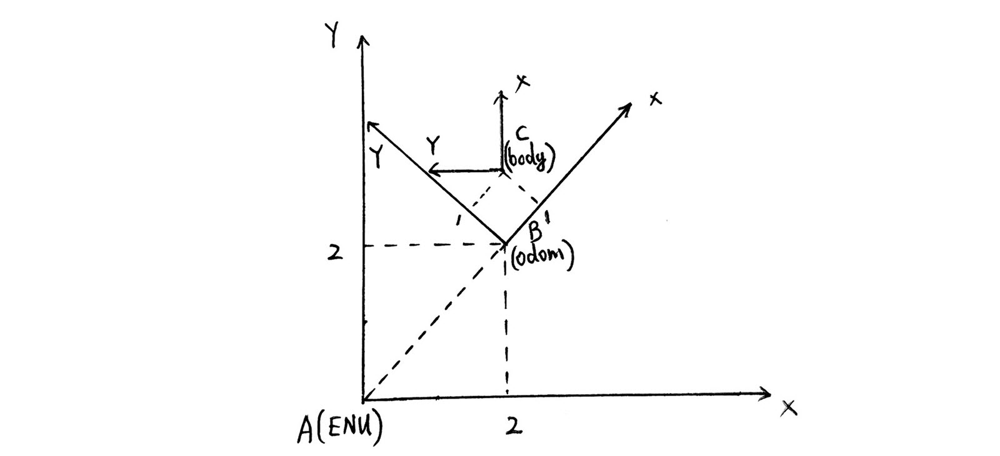
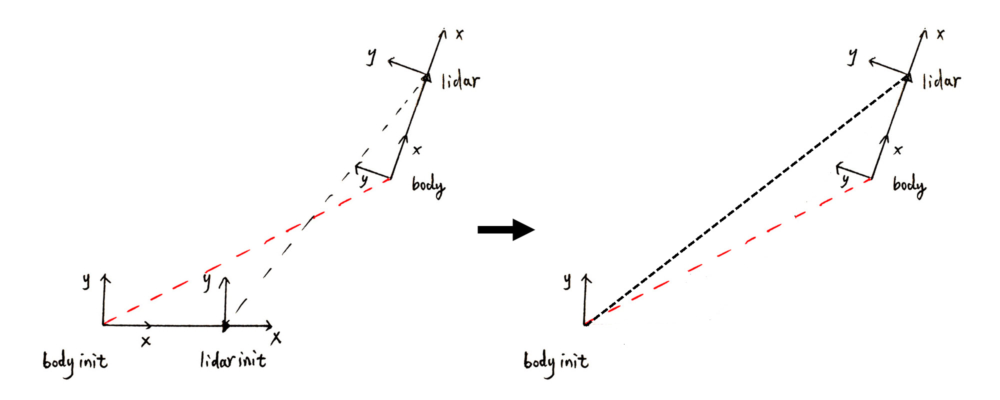

移动机器人中的坐标变换真是又累又绕。向量的平移旋转，欧拉角，位姿变换……纠结了好久。记录一下，方便自查。
坐标系统及约定
本文讨论的所有坐标系均为右手系，并使用其次坐标系。坐标体系采用ROS的规定，前左上为XYZ轴正方向，欧拉角选定ZYX顺规。
本文涉及到的坐标系有：
- NED坐标系和ENU坐标系
- 里程计初始坐标系(init)
- 载体坐标系(body)
- 激光坐标系(lidar)
其中NED和ENU坐标系是站心坐标系，选定地面某点作为原点，坐标轴方向分别是NED和ENU；里程计坐标系以里程计上电为原点，坐标轴方向分别是上电时刻载体的前左上；载体坐标系以当前位置为原点，坐标轴方向分别为当前载体的前左上，激光坐标系以激光传感器当前位置为原点，坐标轴方向为激光传感器的前左上。其坐标关系如图所示，RGB三种颜色分别代表XYZ坐标轴：
问题描述
在自主移动机器人中，有两种很常见的坐标变换需求：一个是求出当前的车体相对于里程计坐标系的位姿变换，这也就是里程计问题；另一个是求出当前车体相对于ENU坐标系的位姿变换，这也就是全局定位问题。
首先讨论最一般的场景，即连续坐标变换，对应上面的第二个问题。我们的需求是：已知载体在里程计坐标系下的位姿，求出载体在ENU坐标系下的位姿。位姿包括位置和朝向，不仅要变换载体的位置，朝向也要做相应的变换，即对一个6d向量(三维)或者3d向量(二维)进行变换：
其中，xyz为位置，pith-yaw-roll和theta为朝向，一般用欧拉角表示，也可以用四元数。对位置的变换比较好理解，就是对向量进行变换；而朝向是绕坐标系旋转的角度，让人无从下手。
解决方法
实际上，我们可以换一个思路，既然载体的朝向表示为载体绕着里程计坐标系三个轴的旋转，那么可以用一个旋转矩阵乘以里程计坐标系来表示这个姿态。同理，载体的位置实际上是表示载体在里程计坐标系下的平移变换，那么可以对里程计坐标系进行平移变换来表示这个向量。因此，位姿可以表示为：
其中，R对应pitch-yaw-roll的旋转矩阵，t对应xyz。这样我们就建立了位姿和坐标转换的联系。这种思路，实际上是将载体的位姿，等效为坐标系的变换。这样的好处是，既然我们是求位姿的在不同坐标系下的连续变换，那么将位姿也看作坐标系，形式上就统一了，理解也就更简单。
下面以一个具体的例子做说明。下图中存在三个坐标系ENU、odom、body，分别对应ENU坐标系，里程计坐标系和载坐标系(这里为了直观，只有二维，三维的情况类似)。从图中可以看出三个坐标系统相互之间的变换关系。

在odom坐标系下，body的位姿可以分别用向量和变换矩阵表示为：
同理，odom坐标系在ENU坐标系下的位姿，可以表示为：
要求body在ENU坐标系下的位姿，直接利用矩阵乘法：
可以得出向量表示为：
验证了变换矩阵的正确性。
使用Eigen进行坐标变换：
Eigen的Isometry3d表示欧式变换，是一个4x4的矩阵，方便我们表示变换矩阵。我们可以通过下面的代码，设置变换矩阵的旋转和平移分量：
1 | Eigen::Quaterniond qRot; // 表示传感器得到的载体旋转 |
我们将传感器中得到的位置和四元数旋转信息传到Isometry3d矩阵中时，存在一个旋转平移的顺序问题，是先平移后旋转，还是先旋转后平移？一般先平移后旋转，这等价于直接通过block设置平移旋转。
求出变换矩阵后，剩下的就是利用变换矩阵进行变换，利用矩阵的左乘即可。
1 | Eigen::Vector3d vBody; // body坐标系下的向量 |
应用场景
举一个具体的里程计问题的例子：
在SLAM的后端优化中，我们经常遇到下面的公式：
Ti和Tj分别是载体在第i帧和第j帧的位姿。等式左边是通过预测得到相邻两帧的相对位姿变换，等式右边是观测得到这两帧的位姿在某坐标系下的位姿。由于存在测量误差，两边不一定相等。因此可以构建最小二乘问题进行优化。
再举一个具体的例子：
问题：在一辆自动驾驶的车上，装载GPS-IMU组合导航传感器和激光传感器，两个传感器在x轴(车前方向)相差-2米。GPS-IMU传感器在第一帧时给出车辆在ENU坐标系下的位置，以及NED坐标系下的朝向，随机失灵。现需要根据当前时刻车载激光里程计的读数，求当前车辆在ENU坐标系下的位姿表示。(车体坐标系与GPS-IMU坐标系重合)
看起来有很多坐标系，很复杂，实际上就四个坐标系：ENU，NED，lidar，body。步骤如下：
- 首先当然是求出第一帧的车体朝向在ENU坐标系下的表示，得到第一帧在ENU坐标系下的位姿T_bodyinit_in_ENU。此后NED坐标系就没用了。
- 然后利用激光里程计的读数，得到当前时刻激光相对于第一帧激光的位姿T_lidar_in_lidarinit。
- 接着利用激光坐标系和GPS-IMU坐标系的位置关系T_lidar_in_bodyinit，求出当前时刻T_body_in_bodyinit。
- 最后利用T_bodyinit_in_ENU，得到T_body_in_ENU。
每一步都是单纯的坐标变换，需要注意的是第三步，实际上包含了两次变换，如下图所示。我们已知的是黑线连接的坐标系，要求红线连接的坐标变换。第一步先不管body坐标系，利用T_lidar_in_lidar_init和T_lidar_in_body求出lidar坐标系在body_init坐标系下的位姿表示T_lidar_in_body_init(如左图)。然后lidar_init就没用了，现在简化成三个坐标系(如右图)，和之前的讨论一致。现在再求出body坐标系在body_init坐标系下的变换即可。

代码如下：
1 | // ************************************************* |
代码经过验证，准确无误。